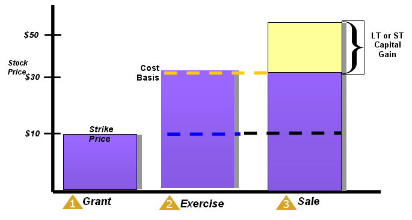

Nonqualified Stock Options
Unlike incentive stock options, Nonqualified Stock Options (NQSOs) have no significant tax benefits. Typically, the option price when granted is the same as the current market value, so there is no tax impact when granted. (If the strike price happened to be less than the stock's value when granted, the difference between the market value and the strike price of all shares granted would be taxed as compensation to the employee and deductible by the employer.) But upon exercise, the spread, also known as the "Bargain Element" in the option, is treated as ordinary compensation income, with no regard to whether or not the stock is then sold or retained. Note that the bargain element is the difference in the strike price of the option and the FMV of the underlying stock when exercised. Upon exercise of NQSOs, employees will have all normal withholding taxes (federal and state income tax, Social Security, Medicare) due upon exercise.
Once the exercise of the NQSOs has taken place, the capital gains clock begins. Upon the ultimate sale of the stock, the gains (or losses) will be taxed under the same rules as with any other security. If held for more than a year from exercise, the gains are treated as long-term capital gains or losses. If the stock is sold in less than a year from exercise, the gains are treated as short-term capital gains or losses.
Look at the chart to ensure you understand the details of taxation on NQSO at grant, exercise, and at the ultimate sale of the underlying stock.
Click on each
in sequence to see the implications at each stage.
